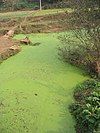

eutrophication

Definition: Eutrophication is a general term describing a process in which nutrients accumulate in a body of water, resulting in an increased growth of microorganisms that may deplete the water of oxygen. Although eutrophication is a natural process, manmade or cultural eutrophication is far more common and is a rapid process caused by a variety of polluting inputs including poorly treated sewage, industrial wastewater, and fertilizer runoff. Such nutrient pollution usually causes algal blooms and bacterial growth, resulting in the depletion of dissolved oxygen in water and causing substantial environmental degradation.
Source: Wikipedia
Wikipedia Page (Something wrong with this association? Let us know.)
Wikidata Page (Something wrong with this association? Let us know.)